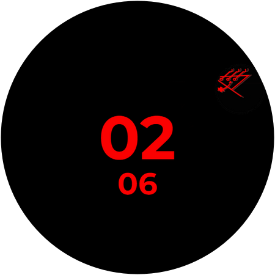

Sundowning

Analog & Digital watchface with sundowning sigils.
Download APKChecking downloads...
TPWBYT
Animated watch face.
Download APKChecking downloads...
Even In Arcadia
Analog watchface with Jerry.
Download APKChecking downloads...
How to Install (Sideload)
Prerequisites (Do This First)
You must enable developer options on your watch before you can use either method below.
Step 1: Enable Developer Options on Your Watch
- On your watch, go to Settings.
- Scroll down and tap on System → About.
- Find Build number.
- Tap it 7 times until you see “You are now a developer!”.
Step 2: Enable ADB & Wireless Debugging
- Go to Developer options in Settings.
- Enable ADB debugging and Wireless debugging.
-
Note the IP:Port displayed (e.g.,
192.168.1.100:5555).
Choose Your Installation Method
Step 3: Sideload from Phone
- Install Bugjaeger or Wear Installer 2 on your phone.
- Ensure phone and watch are on the same Wi-Fi.
- Open Bugjaeger → tap the “Connect” icon → enter your watch’s IP:Port.
- When prompted, allow debugging on your watch.
- Tap “Packages” → “+” → choose the downloaded APK → Install.
- Wait for “Success”.
Step 3: Sideload from PC (using adb)
- Download Android Platform Tools.
- Unzip to a folder (e.g.,
C:\platform-tools). -
Open terminal in that folder:
- Windows: Shift + Right-click → “Open PowerShell here”.
-
Mac/Linux: Open Terminal →
cd ~/platform-tools.
- Ensure same Wi-Fi connection as your watch.
-
adb connect 192.168.1.100:5555 - Allow debugging on your watch.
-
adb install "C:\Users\You\Downloads\com.merciless.sundowning.apk"
Final Step
Step 4: Disable ADB
After installing, turn off ADB debugging and Wireless debugging to save battery.